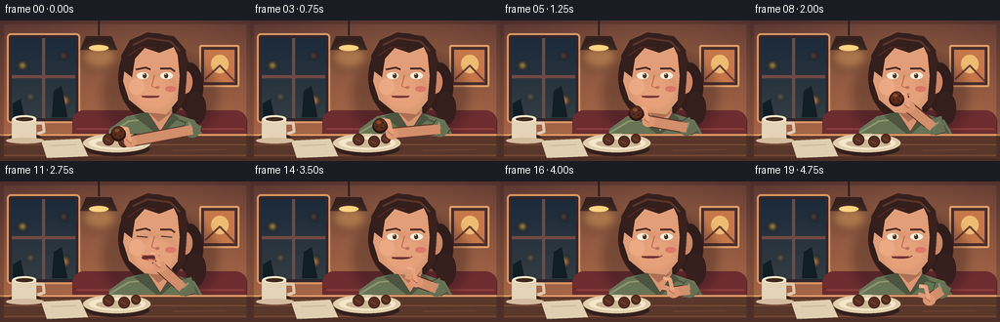
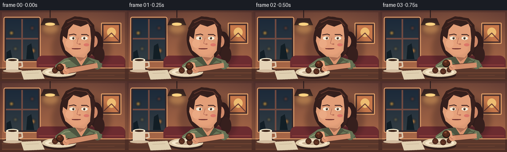

CODING AGENTS AS PIXEL WORLD MODELS
traex/GPT-5.6-Sol · motion_rationality_0024
点击播放 · 原生 RGB 像素
逐轮保存的候选
回放视频、检查图与代码变化。
每份候选均可单独播放。实际图片检查记录在下方工具轨迹中。
候选 01播放与检查图
点击播放 · 原生 RGB 像素

展开代码变化
--- 上一保存版本
+++ 本次保存版本
@@ -0,0 +1,207 @@
+from pathlib import Path
+import math
+import numpy as np
+from PIL import Image, ImageDraw, ImageFilter
+import artifact_io
+
+W,H,N,S = 256,144,20,4
+
+def scbox(b): return tuple(int(round(v*S)) for v in b)
+def pts(p): return [(int(round(x*S)),int(round(y*S))) for x,y in p]
+
+def ease(x):
+ x=max(0,min(1,x)); return x*x*(3-2*x)
+def lerp(a,b,t): return a+(b-a)*t
+
+def ellipse(d,b,fill,outline=None,width=1): d.ellipse(scbox(b),fill=fill,outline=outline,width=width*S)
+def rect(d,b,fill,outline=None,width=1): d.rectangle(scbox(b),fill=fill,outline=outline,width=width*S)
+def rr(d,b,r,fill,outline=None,width=1): d.rounded_rectangle(scbox(b),radius=r*S,fill=fill,outline=outline,width=width*S)
+def poly(d,p,fill,outline=None): d.polygon(pts(p),fill=fill); outline and d.line(pts(p+[p[0]]),fill=outline,width=S)
+def line(d,p,fill,width): d.line(pts(p),fill=fill,width=max(1,int(width*S)),joint='curve')
+
+def soft_ellipse(im,b,color,blur=3):
+ lay=Image.new('RGBA',im.size,(0,0,0,0)); ld=ImageDraw.Draw(lay)
+ ld.ellipse(scbox(b),fill=color); lay=lay.filter(ImageFilter.GaussianBlur(blur*S)); im.alpha_composite(lay)
+
+def background():
+ yy=np.arange(H*S)[:,None]
+ xx=np.arange(W*S)[None,:]
+ top=np.array([86,52,49.],float); bot=np.array([181,111,75.],float)
+ q=(yy/(H*S-1))[:,:,None]
+ arr=np.broadcast_to(top*(1-q)+bot*q,(H*S,W*S,3)).copy()
+ # warm pool of cafe light
+ glow=np.exp(-(((xx-155*S)/(115*S))**2+((yy-35*S)/(75*S))**2))[:,:,None]
+ arr += glow*np.array([30,20,8])[None,None,:]
+ rng=np.random.default_rng(24)
+ arr += rng.normal(0,1.0,arr.shape[:2])[:,:,None]
+ return Image.fromarray(np.uint8(np.clip(arr,0,255)),'RGB').convert('RGBA')
+
+def draw_scene(k):
+ im=background(); d=ImageDraw.Draw(im)
+ # left window recess and frame
+ rr(d,(7,13,82,105),4,(49,38,43,255),(218,151,102,255),2)
+ rect(d,(12,18,77,100),(28,39,50,255))
+ # dusk window gradient panes
+ for y in range(18*S,100*S):
+ f=(y/S-18)/82; col=(int(28+22*f),int(42+18*f),int(58+8*f),255)
+ ImageDraw.Draw(im).line([(12*S,y),(77*S,y)],fill=col,width=1)
+ d=ImageDraw.Draw(im)
+ rect(d,(43,18,46,100),(112,74,65,255)); rect(d,(12,56,77,59),(112,74,65,255))
+ # blurred street lights
+ for x,y,r,c in [(23,46,4,(255,188,73,210)),(65,36,3,(255,111,63,180)),(31,78,3,(255,211,113,170)),(66,82,5,(239,151,67,180))]:
+ soft_ellipse(im,(x-r,y-r,x+r,y+r),c,2.2)
+ d=ImageDraw.Draw(im)
+ # simple silhouettes outdoors
+ poly(d,[(13,99),(13,85),(21,80),(25,99)],(18,30,38,255)); poly(d,[(53,99),(55,72),(63,67),(69,99)],(18,30,37,255))
+ # artwork and pendant lamp
+ rr(d,(204,25,245,68),2,(73,46,43,255),(226,160,104,255),2)
+ rect(d,(209,30,240,63),(198,119,74,255)); ellipse(d,(216,35,234,54),(238,188,113,255)); line(d,[(210,60),(225,46),(240,62)],(108,61,53,255),2)
+ line(d,[(101,0),(101,15)],(46,31,31,255),2); poly(d,[(88,16),(114,16),(120,30),(82,30)],(53,34,32,255))
+ soft_ellipse(im,(82,24,121,50),(255,198,105,80),5)
+ d=ImageDraw.Draw(im)
+ ellipse(d,(91,25,111,31),(255,211,130,255))
+ # booth back
+ rr(d,(74,92,253,137),12,(108,44,48,255)); line(d,[(78,111),(250,111)],(139,61,59,255),2)
+ # cast shadow behind person
+ soft_ellipse(im,(105,30,223,126),(40,20,26,80),5)
+ d=ImageDraw.Draw(im)
+
+ # person, back hair mass
+ ellipse(d,(121,13,195,103),(50,29,27,255))
+ # ponytail at right
+ ellipse(d,(180,43,208,94),(48,28,27,255)); ellipse(d,(190,73,211,107),(54,31,29,255))
+ # neck
+ rr(d,(148,83,176,112),8,(205,137,103,255))
+ soft_ellipse(im,(148,91,177,112),(105,54,45,75),2)
+ d=ImageDraw.Draw(im)
+ # torso / sweater and shoulders
+ poly(d,[(108,144),(112,111),(130,98),(149,94),(163,105),(177,95),(199,102),(223,144)],(104,116,86,255))
+ line(d,[(112,115),(132,103),(149,101)],(139,149,111,255),2)
+ line(d,[(181,101),(198,107),(217,140)],(76,88,66,255),2)
+ # v-neck collar
+ poly(d,[(137,98),(151,93),(162,104),(176,94),(183,100),(163,118)],(77,84,63,255))
+ poly(d,[(151,93),(162,104),(176,94),(164,113)],(220,148,111,255))
+
+ # face shape with ear; tiny head bob while chewing
+ chew = (math.sin((k-11)*2.3)*0.7 if k>=12 else 0)
+ # ear behind cheek
+ ellipse(d,(181,51,197,75),(205,135,103,255)); ellipse(d,(185,56,191,69),(167,94,78,255))
+ # face silhouette, 3/4 view
+ poly(d,[(137,23),(169,19),(187,34),(190,56),(184,79),(170,96+chew),(148,94+chew),(132,81+chew),(126,62),(129,38)],(226,158,120,255))
+ # soft cheek
+ soft_ellipse(im,(134,55,181,94),(255,178,139,38),3)
+ d=ImageDraw.Draw(im)
+ ellipse(d,(132,59,148,76),(235,170,132,255)) # cheek/nose plane subtle
+ # hair cap and side locks
+ poly(d,[(126,51),(124,36),(133,20),(151,12),(178,16),(190,30),(191,48),(184,40),(178,27),(163,33),(148,28),(138,39),(135,58)],(53,31,28,255))
+ poly(d,[(181,26),(192,40),(189,83),(181,92),(184,57)],(57,33,30,255))
+ # hair highlights
+ line(d,[(136,25),(151,18),(174,21),(184,31)],(93,53,43,255),2)
+ line(d,[(131,36),(145,27),(159,28)],(82,45,38,255),1)
+ # brows
+ line(d,[(139,50),(149,48),(154,50)],(76,44,38,255),2)
+ line(d,[(164,49),(175,49),(179,52)],(76,44,38,255),2)
+ # eyes with blink around bite frame 10
+ blink = 0.15 if k in (10,11) else 1.0
+ if blink<0.5:
+ line(d,[(140,56),(151,57)],(66,44,40,255),1.4); line(d,[(165,56),(176,57)],(66,44,40,255),1.4)
+ else:
+ ellipse(d,(140,53,152,60),(248,238,218,255)); ellipse(d,(164,53,177,60),(248,238,218,255))
+ ellipse(d,(146,54,150,59),(68,50,40,255)); ellipse(d,(168,54,172,59),(68,50,40,255))
+ ellipse(d,(147,54.5,148,55.5),(255,255,245,255)); ellipse(d,(169,54.5,170,55.5),(255,255,245,255))
+ # nose
+ line(d,[(158,56),(155,67),(160,69)],(178,107,87,255),1)
+ ellipse(d,(159,67,163,70),(189,116,91,255))
+ # cheek blush
+ ellipse(d,(169,67,180,73),(220,119,105,95))
+
+ # mouth animation: opening as food arrives, then chewing
+ if k<=5:
+ mh=2.1
+ elif k<=10:
+ mh=lerp(2.5,8,ease((k-5)/5))
+ elif k==11:
+ mh=5
+ else:
+ mh=2.2 + (1.3 if k in (13,15,17) else 0)
+ mx,my=154,78+chew
+ ellipse(d,(mx-9,my-mh/2,mx+9,my+mh/2),(98,43,40,255))
+ if mh>4: ellipse(d,(mx-6,my+1,mx+6,my+mh/2-0.4),(188,78,76,255))
+ line(d,[(145,my-mh/2),(154,my-mh/2+0.5),(163,my-mh/2)],(146,68,65,255),1)
+ # smile corner during chewing
+ if k>=12: line(d,[(163,my),(166,my-2)],(135,65,61,255),1)
+
+ # table surface foreground
+ poly(d,[(0,116),(256,116),(256,144),(0,144)],(90,55,43,255))
+ line(d,[(0,117),(256,117)],(225,154,103,255),2)
+ # wood grain
+ for y,alpha in [(127,80),(138,65)]: line(d,[(0,y),(256,y)],(128,78,55,alpha),1)
+ line(d,[(18,120),(57,121),(88,120)],(118,70,51,255),1)
+ line(d,[(177,133),(231,132)],(119,70,50,255),1)
+ # napkin
+ poly(d,[(42,123),(82,121),(90,139),(48,141)],(224,208,177,255)); line(d,[(52,128),(78,127)],(195,174,144,255),1)
+ # plate shadow and plate
+ ellipse(d,(88,124,153,139),(51,31,27,100)); ellipse(d,(85,116,154,135),(224,206,173,255)); ellipse(d,(91,119,149,132),(245,231,203,255)); ellipse(d,(98,122,144,130),(206,183,153,255))
+ # remaining truffles on plate
+ for cx,cy,r in [(111,122,6),(127,124,6),(139,121,5)]:
+ ellipse(d,(cx-r,cy-r,cx+r,cy+r),(64,34,25,255)); ellipse(d,(cx-r+1,cy-r+1,cx+r-1,cy+r-1),(88,46,31,255));
+ line(d,[(cx-3,cy-1),(cx+2,cy+2)],(119,69,47,255),1)
+ # cup at left foreground
+ ellipse(d,(9,116,42,123),(54,34,28,100)); rr(d,(12,99,37,123),3,(229,211,183,255)); ellipse(d,(13,97,37,104),(249,235,207,255)); ellipse(d,(16,99,34,103),(62,39,28,255));
+ line(d,[(37,105),(44,105),(45,114),(38,116)],(222,201,174,255),3)
+ # saucer
+ ellipse(d,(6,120,45,126),(211,188,159,255))
+
+ # Eating arm kinematics. The held truffle center follows a deliberate arc.
+ if k<=2:
+ p=ease(k/2); bx=lerp(121,132,p); by=lerp(115,109,p)
+ elif k<=9:
+ p=ease((k-2)/7); bx=lerp(132,151,p); by=lerp(109,78,p)-3*math.sin(math.pi*p)
+ elif k<=11:
+ bx,by=151,78
+ else:
+ p=ease((k-11)/8); bx=lerp(152,171,p); by=lerp(82,112,p)+2*math.sin(math.pi*p)
+ wrist=(bx+12,by+9)
+ elbow=(lerp(187,197,max(0,(by-78)/38)),109+max(0,(by-85))*0.10)
+ shoulder=(198,106)
+ # arm shadow
+ line(d,[shoulder,elbow],(48,46,36,100),18); line(d,[elbow,wrist],(85,50,39,100),12)
+ # sweater upper arm
+ line(d,[shoulder,elbow],(101,112,84,255),17); ellipse(d,(elbow[0]-8,elbow[1]-8,elbow[0]+8,elbow[1]+8),(101,112,84,255))
+ line(d,[(193,104),elbow],(139,148,110,255),2)
+ # forearm with taper
+ line(d,[elbow,wrist],(211,142,107,255),10)
+ ellipse(d,(wrist[0]-6,wrist[1]-5,wrist[0]+7,wrist[1]+6),(221,151,114,255))
+ # fingers pinch around truffle / after bite
+ # thumb under food
+ line(d,[wrist,(bx+6,by+5),(bx+1,by+4)],(222,151,114,255),5)
+ # index bends over top
+ line(d,[wrist,(bx+9,by-4),(bx+2,by-5)],(232,163,124,255),4)
+ # finger definition and nails
+ line(d,[(bx+8,by-4),(bx+3,by-5)],(249,188,151,255),1.3)
+ line(d,[(wrist[0]+1,wrist[1]+2),(bx+8,by+7)],(186,113,89,255),1)
+ # chocolate truffle present until bite, with bite-sized shrinking at frame 11
+ if k<=10:
+ r=6.8 if k<10 else 6.3
+ # food shadow + cocoa texture
+ ellipse(d,(bx-r-1,by-r+1,bx+r+1,by+r+2),(40,22,18,170))
+ ellipse(d,(bx-r,by-r,bx+r,by+r),(67,32,23,255))
+ ellipse(d,(bx-r+1,by-r+1,bx+r-1,by+r-1),(91,45,29,255))
+ ellipse(d,(bx-3.5,by-4,bx+1,by-1),(137,78,49,255))
+ for ox,oy in [(-3,2),(2,3),(3,-2)]: ellipse(d,(bx+ox-0.7,by+oy-0.7,bx+ox+0.7,by+oy+0.7),(49,25,20,255))
+ # crumbs just after the bite, subtly falling
+ if k in (11,12,13):
+ fall=(k-11)*2
+ for ox,oy in [(2,1),(5,-1)]: ellipse(d,(154+ox,82+oy+fall,155+ox,83+oy+fall),(82,39,25,255))
+
+ # foreground edge and overall subtle vignette
+ vign=Image.new('RGBA',im.size,(0,0,0,0)); vd=ImageDraw.Draw(vign)
+ vd.rectangle((0,0,W*S,H*S),outline=(30,15,18,55),width=4*S)
+ im=Image.alpha_composite(im,vign)
+ return np.array(im.convert('RGB').resize((W,H),Image.Resampling.LANCZOS),dtype=np.uint8)
+
+def main():
+ frames=np.stack([draw_scene(i) for i in range(N)])
+ artifact_io.save(frames,Path(__file__).resolve().parent)
+
+if __name__=='__main__': main()
可观测工具轨迹
实际执行的命令与返回图片。
命令 1exit 0
/bin/bash -lc "cat prompt.txt && printf '\\n---RULES---\\n' && cat GENERATION_RULES.md && printf '\\n---SPEC---\\n' && cat task_spec.json"
命令 2exit 0
/bin/bash -lc "find . -maxdepth 2 -type f -printf '%p\\n' | sort && printf '\\n---TOOLS---\\n' && command -v ffmpeg || true && command -v python3 || true && command -v convert || true"
命令 3exit 0
/bin/bash -lc 'cat artifact_io.py'
命令 4exit 0
/bin/bash -lc "cat > generate.py <<'PY'
from pathlib import Path
import math
import numpy as np
from PIL import Image, ImageDraw, ImageFilter
import artifact_io
W,H,N,S = 256,144,20,4
def scbox(b): return tuple(int(round(v*S)) for v in b)
def pts(p): return [(int(round(x*S)),int(round(y*S))) for x,y in p]
def ease(x):
x=max(0,min(1,x)); return x*x*(3-2*x)
def lerp(a,b,t): return a+(b-a)*t
def ellipse(d,b,fill,outline=None,width=1): d.ellipse(scbox(b),fill=fill,outline=outline,width=width*S)
def rect(d,b,fill,outline=None,width=1): d.rectangle(scbox(b),fill=fill,outline=outline,width=width*S)
def rr(d,b,r,fill,outline=None,width=1): d.rounded_rectangle(scbox(b),radius=r*S,fill=fill,outline=outline,width=width*S)
def poly(d,p,fill,outline=None): d.polygon(pts(p),fill=fill); outline and d.line(pts(p+[p[0]]),fill=outline,width=S)
def line(d,p,fill,width): d.line(pts(p),fill=fill,width=max(1,int(width*S)),joint='curve')
def soft_ellipse(im,b,color,blur=3):
lay=Image.new('RGBA',im.size,(0,0,0,0)); ld=ImageDraw.Draw(lay)
ld.ellipse(scbox(b),fill=color); lay=lay.filter(ImageFilter.GaussianBlur(blur*S)); im.alpha_composite(lay)
def background():
yy=np.arange(H*S)[:,None]
xx=np.arange(W*S)[None,:]
top=np.array([86,52,49.],float); bot=np.array([181,111,75.],float)
q=(yy/(H*S-1))[:,:,None]
arr=np.broadcast_to(top*(1-q)+bot*q,(H*S,W*S,3)).copy()
# warm pool of cafe light
glow=np.exp(-(((xx-155*S)/(115*S))**2+((yy-35*S)/(75*S))**2))[:,:,None]
arr += glow*np.array([30,20,8])[None,None,:]
rng=np.random.default_rng(24)
arr += rng.normal(0,1.0,arr.shape[:2])[:,:,None]
return Image.fromarray(np.uint8(np.clip(arr,0,255)),'RGB').convert('RGBA')
def draw_scene(k):
im=background(); d=ImageDraw.Draw(im)
# left window recess and frame
rr(d,(7,13,82,105),4,(49,38,43,255),(218,151,102,255),2)
rect(d,(12,18,77,100),(28,39,50,255))
# dusk window gradient panes
for y in range(18*S,100*S):
f=(y/S-18)/82; col=(int(28+22*f),int(42+18*f),int(58+8*f),255)
ImageDraw.Draw(im).line([(12*S,y),(77*S,y)],fill=col,width=1)
d=ImageDraw.Draw(im)
rect(d,(43,18,46,100),(112,74,65,255)); rect(d,(12,56,77,59),(112,74,65,255))
# blurred street lights
for x,y,r,c in [(23,46,4,(255,188,73,210)),(65,36,3,(255,111,63,180)),(31,78,3,(255,211,113,170)),(66,82,5,(239,151,67,180))]:
soft_ellipse(im,(x-r,y-r,x+r,y+r),c,2.2)
d=ImageDraw.Draw(im)
# simple silhouettes outdoors
poly(d,[(13,99),(13,85),(21,80),(25,99)],(18,30,38,255)); poly(d,[(53,99),(55,72),(63,67),(69,99)],(18,30,37,255))
# artwork and pendant lamp
rr(d,(204,25,245,68),2,(73,46,43,255),(226,160,104,255),2)
rect(d,(209,30,240,63),(198,119,74,255)); ellipse(d,(216,35,234,54),(238,188,113,255)); line(d,[(210,60),(225,46),(240,62)],(108,61,53,255),2)
line(d,[(101,0),(101,15)],(46,31,31,255),2); poly(d,[(88,16),(114,16),(120,30),(82,30)],(53,34,32,255))
soft_ellipse(im,(82,24,121,50),(255,198,105,80),5)
d=ImageDraw.Draw(im)
ellipse(d,(91,25,111,31),(255,211,130,255))
# booth back
rr(d,(74,92,253,137),12,(108,44,48,255)); line(d,[(78,111),(250,111)],(139,61,59,255),2)
# cast shadow behind person
soft_ellipse(im,(105,30,223,126),(40,20,26,80),5)
d=ImageDraw.Draw(im)
# person, back hair mass
ellipse(d,(121,13,195,103),(50,29,27,255))
# ponytail at right
ellipse(d,(180,43,208,94),(48,28,27,255)); ellipse(d,(190,73,211,107),(54,31,29,255))
# neck
rr(d,(148,83,176,112),8,(205,137,103,255))
soft_ellipse(im,(148,91,177,112),(105,54,45,75),2)
d=ImageDraw.Draw(im)
# torso / sweater and shoulders
poly(d,[(108,144),(112,111),(130,98),(149,94),(163,105),(177,95),(199,102),(223,144)],(104,116,86,255))
line(d,[(112,115),(132,103),(149,101)],(139,149,111,255),2)
line(d,[(181,101),(198,107),(217,140)],(76,88,66,255),2)
# v-neck collar
poly(d,[(137,98),(151,93),(162,104),(176,94),(183,100),(163,118)],(77,84,63,255))
poly(d,[(151,93),(162,104),(176,94),(164,113)],(220,148,111,255))
# face shape with ear; tiny head bob while chewing
chew = (math.sin((k-11)*2.3)*0.7 if k>=12 else 0)
# ear behind cheek
ellipse(d,(181,51,197,75),(205,135,103,255)); ellipse(d,(185,56,191,69),(167,94,78,255))
# face silhouette, 3/4 view
poly(d,[(137,23),(169,19),(187,34),(190,56),(184,79),(170,96+chew),(148,94+chew),(132,81+chew),(126,62),(129,38)],(226,158,120,255))
# soft cheek
soft_ellipse(im,(134,55,181,94),(255,178,139,38),3)
d=ImageDraw.Draw(im)
ellipse(d,(132,59,148,76),(235,170,132,255)) # cheek/nose plane subtle
# hair cap and side locks
poly(d,[(126,51),(124,36),(133,20),(151,12),(178,16),(190,30),(191,48),(184,40),(178,27),(163,33),(148,28),(138,39),(135,58)],(53,31,28,255))
poly(d,[(181,26),(192,40),(189,83),(181,92),(184,57)],(57,33,30,255))
# hair highlights
line(d,[(136,25),(151,18),(174,21),(184,31)],(93,53,43,255),2)
line(d,[(131,36),(145,27),(159,28)],(82,45,38,255),1)
# brows
line(d,[(139,50),(149,48),(154,50)],(76,44,38,255),2)
line(d,[(164,49),(175,49),(179,52)],(76,44,38,255),2)
# eyes with blink around bite frame 10
blink = 0.15 if k in (10,11) else 1.0
if blink<0.5:
line(d,[(140,56),(151,57)],(66,44,40,255),1.4); line(d,[(165,56),(176,57)],(66,44,40,255),1.4)
else:
ellipse(d,(140,53,152,60),(248,238,218,255)); ellipse(d,(164,53,177,60),(248,238,218,255))
ellipse(d,(146,54,150,59),(68,50,40,255)); ellipse(d,(168,54,172,59),(68,50,40,255))
ellipse(d,(147,54.5,148,55.5),(255,255,245,255)); ellipse(d,(169,54.5,170,55.5),(255,255,245,255))
# nose
line(d,[(158,56),(155,67),(160,69)],(178,107,87,255),1)
ellipse(d,(159,67,163,70),(189,116,91,255))
# cheek blush
ellipse(d,(169,67,180,73),(220,119,105,95))
# mouth animation: opening as food arrives, then chewing
if k<=5:
mh=2.1
elif k<=10:
mh=lerp(2.5,8,ease((k-5)/5))
elif k==11:
mh=5
else:
mh=2.2 + (1.3 if k in (13,15,17) else 0)
mx,my=154,78+chew
ellipse(d,(mx-9,my-mh/2,mx+9,my+mh/2),(98,43,40,255))
if mh>4: ellipse(d,(mx-6,my+1,mx+6,my+mh/2-0.4),(188,78,76,255))
line(d,[(145,my-mh/2),(154,my-mh/2+0.5),(163,my-mh/2)],(146,68,65,255),1)
# smile corner during chewing
if k>=12: line(d,[(163,my),(166,my-2)],(135,65,61,255),1)
# table surface foreground
poly(d,[(0,116),(256,116),(256,144),(0,144)],(90,55,43,255))
line(d,[(0,117),(256,117)],(225,154,103,255),2)
# wood grain
for y,alpha in [(127,80),(138,65)]: line(d,[(0,y),(256,y)],(128,78,55,alpha),1)
line(d,[(18,120),(57,121),(88,120)],(118,70,51,255),1)
line(d,[(177,133),(231,132)],(119,70,50,255),1)
# napkin
poly(d,[(42,123),(82,121),(90,139),(48,141)],(224,208,177,255)); line(d,[(52,128),(78,127)],(195,174,144,255),1)
# plate shadow and plate
ellipse(d,(88,124,153,139),(51,31,27,100)); ellipse(d,(85,116,154,135),(224,206,173,255)); ellipse(d,(91,119,149,132),(245,231,203,255)); ellipse(d,(98,122,144,130),(206,183,153,255))
# remaining truffles on plate
for cx,cy,r in [(111,122,6),(127,124,6),(139,121,5)]:
ellipse(d,(cx-r,cy-r,cx+r,cy+r),(64,34,25,255)); ellipse(d,(cx-r+1,cy-r+1,cx+r-1,cy+r-1),(88,46,31,255));
line(d,[(cx-3,cy-1),(cx+2,cy+2)],(119,69,47,255),1)
# cup at left foreground
ellipse(d,(9,116,42,123),(54,34,28,100)); rr(d,(12,99,37,123),3,(229,211,183,255)); ellipse(d,(13,97,37,104),(249,235,207,255)); ellipse(d,(16,99,34,103),(62,39,28,255));
line(d,[(37,105),(44,105),(45,114),(38,116)],(222,201,174,255),3)
# saucer
ellipse(d,(6,120,45,126),(211,188,159,255))
# Eating arm kinematics. The held truffle center follows a deliberate arc.
if k<=2:
p=ease(k/2); bx=lerp(121,132,p); by=lerp(115,109,p)
elif k<=9:
p=ease((k-2)/7); bx=lerp(132,151,p); by=lerp(109,78,p)-3*math.sin(math.pi*p)
elif k<=11:
bx,by=151,78
else:
p=ease((k-11)/8); bx=lerp(152,171,p); by=lerp(82,112,p)+2*math.sin(math.pi*p)
wrist=(bx+12,by+9)
elbow=(lerp(187,197,max(0,(by-78)/38)),109+max(0,(by-85))*0.10)
shoulder=(198,106)
# arm shadow
line(d,[shoulder,elbow],(48,46,36,100),18); line(d,[elbow,wrist],(85,50,39,100),12)
# sweater upper arm
line(d,[shoulder,elbow],(101,112,84,255),17); ellipse(d,(elbow[0]-8,elbow[1]-8,elbow[0]+8,elbow[1]+8),(101,112,84,255))
line(d,[(193,104),elbow],(139,148,110,255),2)
# forearm with taper
line(d,[elbow,wrist],(211,142,107,255),10)
ellipse(d,(wrist[0]-6,wrist[1]-5,wrist[0]+7,wrist[1]+6),(221,151,114,255))
# fingers pinch around truffle / after bite
# thumb under food
line(d,[wrist,(bx+6,by+5),(bx+1,by+4)],(222,151,114,255),5)
# index bends over top
line(d,[wrist,(bx+9,by-4),(bx+2,by-5)],(232,163,124,255),4)
# finger definition and nails
line(d,[(bx+8,by-4),(bx+3,by-5)],(249,188,151,255),1.3)
line(d,[(wrist[0]+1,wrist[1]+2),(bx+8,by+7)],(186,113,89,255),1)
# chocolate truffle present until bite, with bite-sized shrinking at frame 11
if k<=10:
r=6.8 if k<10 else 6.3
# food shadow + cocoa texture
ellipse(d,(bx-r-1,by-r+1,bx+r+1,by+r+2),(40,22,18,170))
ellipse(d,(bx-r,by-r,bx+r,by+r),(67,32,23,255))
ellipse(d,(bx-r+1,by-r+1,bx+r-1,by+r-1),(91,45,29,255))
ellipse(d,(bx-3.5,by-4,bx+1,by-1),(137,78,49,255))
for ox,oy in [(-3,2),(2,3),(3,-2)]: ellipse(d,(bx+ox-0.7,by+oy-0.7,bx+ox+0.7,by+oy+0.7),(49,25,20,255))
# crumbs just after the bite, subtly falling
if k in (11,12,13):
fall=(k-11)*2
for ox,oy in [(2,1),(5,-1)]: ellipse(d,(154+ox,82+oy+fall,155+ox,83+oy+fall),(82,39,25,255))
# foreground edge and overall subtle vignette
vign=Image.new('RGBA',im.size,(0,0,0,0)); vd=ImageDraw.Draw(vign)
vd.rectangle((0,0,W*S,H*S),outline=(30,15,18,55),width=4*S)
im=Image.alpha_composite(im,vign)
return np.array(im.convert('RGB').resize((W,H),Image.Resampling.LANCZOS),dtype=np.uint8)
def main():
frames=np.stack([draw_scene(i) for i in range(N)])
artifact_io.save(frames,Path(__file__).resolve().parent)
if __name__=='__main__': main()
PY
python3 generate.py
ls -lh pixels.npz inspection.png index.html frames/00.png frames/19.png"命令 5exit 0
/bin/bash -lc "python3 - <<'PY'
import numpy as np
from PIL import Image
z=np.load('pixels.npz')['pixels']
print('pixels',z.shape,z.dtype,'frames',len(list(__import__('pathlib').Path('frames').glob('*.png'))))
for p in ['frames/00.png','frames/10.png','frames/19.png']:
im=Image.open(p); print(p, im.mode, im.size)
PY"视觉工具实际返回图片 1

视觉工具实际返回图片 2

保存候选 1 份；完成命令 5 次；可验证图片返回 2 张。原始 API 响应与完整日志保留在本地。